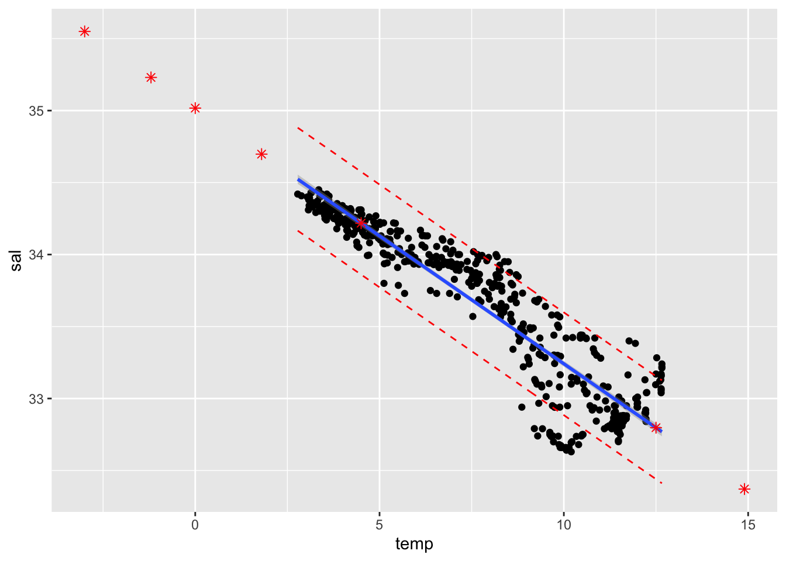

Last updated: 2019-11-04
Checks: 7 0
Knit directory: STA_463_563_Fall2019/
This reproducible R Markdown analysis was created with workflowr (version 1.4.0). The Checks tab describes the reproducibility checks that were applied when the results were created. The Past versions tab lists the development history.
Great! Since the R Markdown file has been committed to the Git repository, you know the exact version of the code that produced these results.
Great job! The global environment was empty. Objects defined in the global environment can affect the analysis in your R Markdown file in unknown ways. For reproduciblity it’s best to always run the code in an empty environment.
The command set.seed(20190905) was run prior to running the code in the R Markdown file. Setting a seed ensures that any results that rely on randomness, e.g. subsampling or permutations, are reproducible.
Great job! Recording the operating system, R version, and package versions is critical for reproducibility.
Nice! There were no cached chunks for this analysis, so you can be confident that you successfully produced the results during this run.
Great job! Using relative paths to the files within your workflowr project makes it easier to run your code on other machines.
Great! You are using Git for version control. Tracking code development and connecting the code version to the results is critical for reproducibility. The version displayed above was the version of the Git repository at the time these results were generated.
Note that you need to be careful to ensure that all relevant files for the analysis have been committed to Git prior to generating the results (you can use wflow_publish or wflow_git_commit). workflowr only checks the R Markdown file, but you know if there are other scripts or data files that it depends on. Below is the status of the Git repository when the results were generated:
Ignored files:
Ignored: .DS_Store
Ignored: .Rhistory
Ignored: .Rproj.user/
Ignored: analysis/.DS_Store
Untracked files:
Untracked: analysis/transform.Rmd
Untracked: docs/figure/lab_hw3_sol.Rmd/
Untracked: docs/figure/transform.Rmd/
Note that any generated files, e.g. HTML, png, CSS, etc., are not included in this status report because it is ok for generated content to have uncommitted changes.
These are the previous versions of the R Markdown and HTML files. If you’ve configured a remote Git repository (see ?wflow_git_remote), click on the hyperlinks in the table below to view them.
| File | Version | Author | Date | Message |
|---|---|---|---|---|
| Rmd | 81f1e6d | dleelab | 2019-10-22 | created |
Upload a pdf file or word file in Canvas generated using R markdown. You should clearly label the question number, include the r code, the output and any necessary explanation in your file. The plots should be made using ggplot2 package.
cofi <- read.table("https://raw.githubusercontent.com/dleelab/STA463_563_Fall2019/master/data/calcofi_500.csv", header=TRUE, sep = ",")
head(cofi) sal temp depth
1 33.440 10.50 0
2 33.440 10.46 8
3 33.437 10.46 10
4 33.420 10.45 19
5 33.421 10.45 20
6 33.431 10.45 30cofi.fit <- lm(sal~temp, data=cofi)
summary(cofi.fit)
Call:
lm(formula = sal ~ temp, data = cofi)
Residuals:
Min 1Q Median 3Q Max
-0.6274 -0.1053 -0.0035 0.1383 0.4892
Coefficients:
Estimate Std. Error t value Pr(>|t|)
(Intercept) 35.017089 0.027904 1254.93 <2e-16 ***
temp -0.177578 0.003343 -53.11 <2e-16 ***
---
Signif. codes: 0 '***' 0.001 '**' 0.01 '*' 0.05 '.' 0.1 ' ' 1
Residual standard error: 0.2161 on 491 degrees of freedom
Multiple R-squared: 0.8517, Adjusted R-squared: 0.8514
F-statistic: 2821 on 1 and 491 DF, p-value: < 2.2e-16The residual standard error is 0.2161 with degree of freedom 491 based on the lm output.
df <- nrow(cofi)-2
sqrt(sum(cofi.fit$residuals^2)/df)[1] 0.2161469The result from the above calculation shows the values provided by the summary(cofi.fit) function about residual standard error and the degree of freedom are correct.
\(R^2=0.8517\). It means 85.17% of the total variation in Salinity can be explained by a linear relationship with Temperature.
(1) \(H_0:\beta_1=0\), \(H_0:\beta_1\neq0\).
(2) The ANOVA table is as follows:
anova(cofi.fit)Analysis of Variance Table
Response: sal
Df Sum Sq Mean Sq F value Pr(>F)
temp 1 131.789 131.789 2820.9 < 2.2e-16 ***
Residuals 491 22.939 0.047
---
Signif. codes: 0 '***' 0.001 '**' 0.01 '*' 0.05 '.' 0.1 ' ' 1(3) The test statistic is 2820.9. (4) The p-value is less than \(2.2\times 10^{-16}\). 2.2e-16 or \(2.2\times 10^{-16}\) is the smallest positive number that can be stored in the floating points system. If conducting the analysis at confidence level 0.05, the critical value is 3.860467.
qf(0.95,1,nrow(cofi)-2)[1] 3.860467(5) Compare the p-value with 0.05, since the pval (<\(2.2\times 10^{-16}\)) is much smaller than 0.05, we reject the null hypothesis and conclude \(\beta_1\neq0\). That is there’s significant linear relationship between salinity and temperature. (Or we can also compare the test statistic with critical value. Since 2820.9 is much larger than critical value 3.860467, we reject the null hypothesis and conclude \(\beta_1\neq0\). That is there’s significant linear relationship between salinity and temperature. )
confint(cofi.fit,,0.9) 5 % 95 %
(Intercept) 34.9711048 35.0630731
temp -0.1830875 -0.1720677xh <- data.frame(temp=c(3.8, 4.2, 5.5, 9.6, 10, 11.2))
confb <-predict(cofi.fit, xh, interval="confidence", level=0.9)
confb fit lwr upr
1 34.34229 34.31494 34.36965
2 34.27126 34.24566 34.29687
3 34.04041 34.01989 34.06093
4 33.31234 33.29354 33.33114
5 33.24131 33.22128 33.26135
6 33.02822 33.00364 33.05279xhnew <- data.frame(temp=c(-3,-1.2, 0, 1.8, 4.5, 12.5, 14.9))
predb <- predict(cofi.fit, xhnew, interval="prediction", level=0.9)
pred.df <- cbind(xhnew, predb)library(ggplot2)
conf.band <- predict(cofi.fit, interval="confidence", level=0.9)
pred.band <- predict(cofi.fit, interval="prediction", level=0.9)Warning in predict.lm(cofi.fit, interval = "prediction", level = 0.9): predictions on current data refer to _future_ responsescolnames(conf.band) <- c("conf.fit","conf.lwr","conf.upr")
colnames(pred.band) <- c("pred.fit","pred.lwr","pred.upr")
ggplot(cbind(cofi,conf.band, pred.band)) +
geom_point(aes(x=temp, y=sal)) +
geom_smooth(method=lm, se=TRUE, aes(x=temp, y=sal), level=0.9) +
geom_point(data=pred.df, aes(x=temp, y=fit), col="red", shape=8, size=2) +
geom_line(aes(x=temp, y=pred.lwr), col="red", linetype="dashed") +
geom_line(aes(x=temp, y=pred.upr), col="red", linetype="dashed") 
## OR
ggplot(cbind(cofi,conf.band, pred.band)) +
geom_point(aes(x=temp, y=sal)) +
geom_point(data=pred.df, aes(x=temp, y=fit), col="red", shape=8, size=2) +
geom_line(aes(x=temp, y=conf.lwr), col="blue", linetype="dashed") + ## this is also OK.
geom_line(aes(x=temp, y=conf.upr), col="blue", linetype="dashed") +
geom_line(aes(x=temp, y=pred.lwr), col="red", linetype="dashed") +
geom_line(aes(x=temp, y=pred.upr), col="red", linetype="dashed")## OR
ggplot(cbind(cofi,conf.band, pred.band)) +
geom_point(aes(x=temp, y=sal)) +
geom_smooth(method=lm, se=TRUE, aes(x=temp, y=sal), level=0.9) +
geom_point(data=pred.df, aes(x=temp, y=fit), col="red", shape=8, size=2) +
geom_line(data=pred.df, aes(x=temp, y=lwr), col="red", linetype="dashed") +
geom_line(data=pred.df, aes(x=temp, y=upr), col="red", linetype="dashed")
sessionInfo()R version 3.6.1 (2019-07-05)
Platform: x86_64-apple-darwin15.6.0 (64-bit)
Running under: macOS Mojave 10.14.6
Matrix products: default
BLAS: /Library/Frameworks/R.framework/Versions/3.6/Resources/lib/libRblas.0.dylib
LAPACK: /Library/Frameworks/R.framework/Versions/3.6/Resources/lib/libRlapack.dylib
locale:
[1] en_US.UTF-8/en_US.UTF-8/en_US.UTF-8/C/en_US.UTF-8/en_US.UTF-8
attached base packages:
[1] stats graphics grDevices utils datasets methods base
other attached packages:
[1] ggplot2_3.2.1
loaded via a namespace (and not attached):
[1] Rcpp_1.0.2 knitr_1.24 whisker_0.3-2 magrittr_1.5
[5] workflowr_1.4.0 tidyselect_0.2.5 munsell_0.5.0 colorspace_1.4-1
[9] R6_2.4.0 rlang_0.4.0 dplyr_0.8.3 stringr_1.4.0
[13] tools_3.6.1 grid_3.6.1 gtable_0.3.0 xfun_0.9
[17] withr_2.1.2 git2r_0.26.1 htmltools_0.3.6 assertthat_0.2.1
[21] yaml_2.2.0 lazyeval_0.2.2 rprojroot_1.3-2 digest_0.6.20
[25] tibble_2.1.3 crayon_1.3.4 purrr_0.3.2 fs_1.3.1
[29] glue_1.3.1 evaluate_0.14 rmarkdown_1.15 labeling_0.3
[33] stringi_1.4.3 pillar_1.4.2 compiler_3.6.1 scales_1.0.0
[37] backports_1.1.4 pkgconfig_2.0.2